[1]:
import straph as sg
import matplotlib.pyplot as plt
import networkx as nx
[2]:
plt.rcParams["figure.figsize"] = (12,9)
Straph, a python library, was developed in order to have a reliable library for manipulating, analysing and visualising stream graphs, to design algorithms and models, and to rapidly evaluate them.
Getting Started¶
A stream graph is a quadruplet  where
where  is a finite set of
nodes, 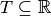 a time interval ,
is a finite set of
nodes, 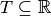 a time interval ,  a set of temporal nodes, and 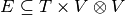 a set of links such
that 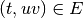 implies 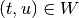 and 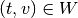.
a set of temporal nodes, and 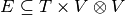 a set of links such
that 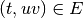 implies 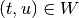 and 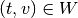.
Let’s begin by a short example, consider three individuals  ,
,  and
and
 (we have 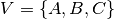), we observe these entities and their interactions for a
period of one hour (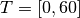, the unit of measurement here is the minute but note
that time is modeled continuously.).
(we have 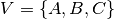), we observe these entities and their interactions for a
period of one hour (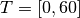, the unit of measurement here is the minute but note
that time is modeled continuously.).
and are active during the whole hour but is inactive between the
30th and 40th minutes (we have 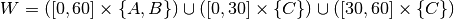).
Individual interacts continously with for 30 minutes starting at
the 10th minute while interacts instantly with at the 50th minute
(we have 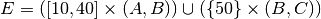).
The following figure represents graphically such interactions:
[3]:
S = sg.StreamGraph(times = [0,60],
nodes = [0,1,2],
node_presence = [[0,60],
[0,60],
[0,30,40,60]],
links = [(0,1),(1,2)],
link_presence = [[10,40],
[50,50]],
node_to_label = {0:'A',1:'B',2:'C'})
_ = S.plot()

Reading Usual Datasets¶
A dynamic network is usually represented (and stored) by a sequence of temporal links and stored in a .csv or a .tsv.
The first step is to ensure that a .csv is temporally ordered. Several formats coexists, some with a timestamp denoting the existence of an interaction betweeen two entities at a given instant, some with both a beginning and an ending time for each interaction, some with an implicit duration for each interaction, …
Therefore, parsers implemented in Straph are modular, they must be adjusted for each dataset.
[4]:
entry_format = {'b_pos':0,'e_pos':1,'u_pos':2,'v_pos':3}
input_file = "examples/example.csv"
sg.sort_csv(input_file, entry_format, delimiter = ";",ignore_header = False)
Reading CSV before sorting: 100%|███████████████████████████████████████████████████| 11/11 [00:00<00:00, 11021.82it/s]
Writing CSV: 100%|██████████████████████████████████████████████████████████████████| 11/11 [00:00<00:00, 11003.42it/s]
After sorting a dataset in a temporal fashion we can load it as stream graph object.
[5]:
S = sg.parser(input_file , entry_format= entry_format,
delimiter = ";", input_format = 'csv', nodes_to_label = True,
ignore_header = False);
Parsing CSV: 11it [00:00, 11355.49it/s]
We can visualise this object with the .plot() function.
[6]:
fig = S.plot()
The Straph module
also as its own data format: .sg. This format is dedicated to stream graphs, its
the fastest way to read and write with Straph ; it also support nodes appearances and
disappearances (can encode the presence or absence of a node over time).
[7]:
S = sg.read_stream_graph(path_links = "examples/example_links.sg",
path_nodes = "examples/example_nodes.sg")
fig = S.plot()

Straph Functionalities¶
Straph provides
many features, some are ‘global’ and describe a stream graph as a whole, some concern only
nodes or links, some features return constant other time series. We refer to the API
reference for an extensive description and to the other tutorials for practical examples of
Straph’s
functionalities.
For example we can obtain the number of nodes in a stream graph, defined by 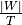,
by calling the method .nb_nodes().
[8]:
S.nb_nodes()
[8]:
4.4
We can obtain the instant degree of each temporal node and graphically represent it.
[9]:
degrees = S.degrees_partition()
fig = S.plot(clusters = degrees)
We can also obtain the time series corresponding to the betweenness of node B. In
order to do so, we use the implementation of the betweenness of networkx.
[10]:
prop_nx = S.graph_property(nx.algorithms.centrality.betweenness_centrality, format = 'signal',datetime=False)
ax = prop_nx[1].plot(linewidth = 3,title = "Betweenness of B over time",
ylabel = "Betweenness",xlabel = "t")

Or we can observe the betweenness of each node:
[11]:
prop_nx = S.graph_property(nx.algorithms.centrality.betweenness_centrality, format = 'cluster')
_ = S.plot(clusters = prop_nx)